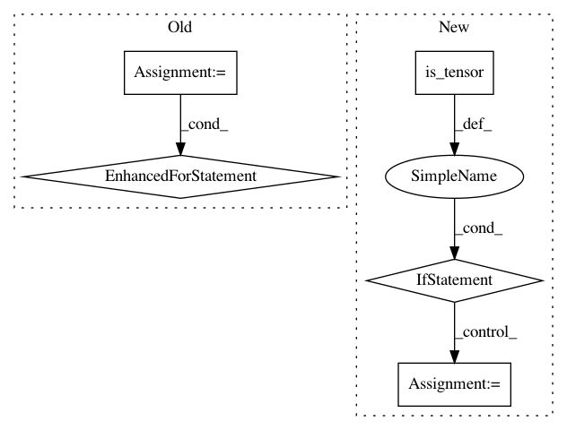

2bd6dff4cacf1e25989f04cf8a243c3c06ab1269,torch_geometric/data/batch.py,Batch,from_data_list,#Any#Any#,22
Before Change
cumsum[key] += data.__inc__(key, item)
batch[key].append(item)
for key in follow_batch:
item = torch.full((size, ), i, dtype=torch.long)
batch["{}_batch".format(key)].append(item)
num_nodes = data.num_nodes
if num_nodes is not None:
item = torch.full((num_nodes, ), i, dtype=torch.long)
batch.batch.append(item)
After Change
for i, data in enumerate(data_list):
for key in data.keys:
item = data[key] + cumsum[key]
if torch.is_tensor(data[key]):
size = data[key].size(data.__cat_dim__(key, data[key]))
else:
size = 1
batch.__slices__[key].append(size + batch.__slices__[key][-1])
cumsum[key] += data.__inc__(key, item)
batch[key].append(item)
In pattern: SUPERPATTERN
Frequency: 3
Non-data size: 5
Instances
Project Name: rusty1s/pytorch_geometric
Commit Name: 2bd6dff4cacf1e25989f04cf8a243c3c06ab1269
Time: 2019-07-04
Author: matthias.fey@tu-dortmund.de
File Name: torch_geometric/data/batch.py
Class Name: Batch
Method Name: from_data_list
Project Name: cornellius-gp/gpytorch
Commit Name: 3879bcde8d42c619c96b6483dba14a76a8e5f00b
Time: 2019-09-29
Author: kaw293@cornell.edu
File Name: gpytorch/utils/grid.py
Class Name:
Method Name: create_data_from_grid
Project Name: dmlc/dgl
Commit Name: cf8a3fb30547d6e980ecd8182f64a51df8e55c62
Time: 2021-02-10
Author: expye@outlook.com
File Name: python/dgl/backend/pytorch/tensor.py
Class Name:
Method Name: pack_padded_tensor